Dimineața
Drumul spre Brașov
Prima zi a practicii începe în gara din Constanța, cu trenul direct spre Brașov. Răsăritul, drumul lung și energia grupului deschid săptămâna de teren.
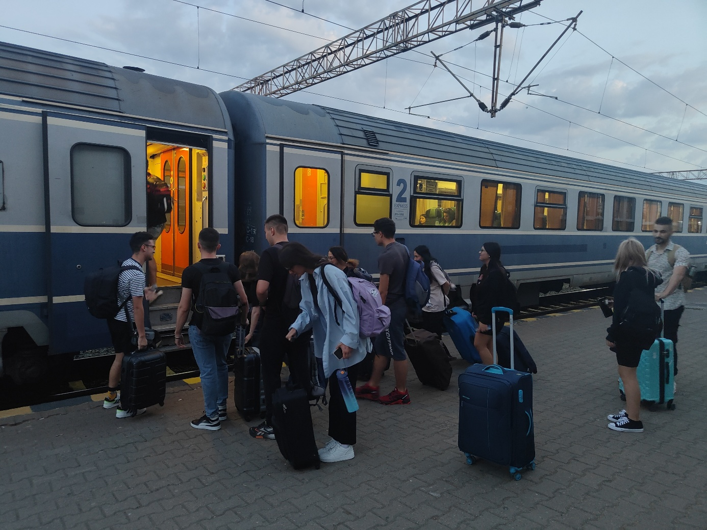

Practică de teren · Jurnal geografic

Etapele zilei
Prima zi a practicii începe în gara din Constanța, cu trenul direct spre Brașov. Răsăritul, drumul lung și energia grupului deschid săptămâna de teren.

Studenții au lucrat în echipe, cu hartă și obiective de identificat, într-un exercițiu de orientare urbană, observație și lectură a spațiului turistic.

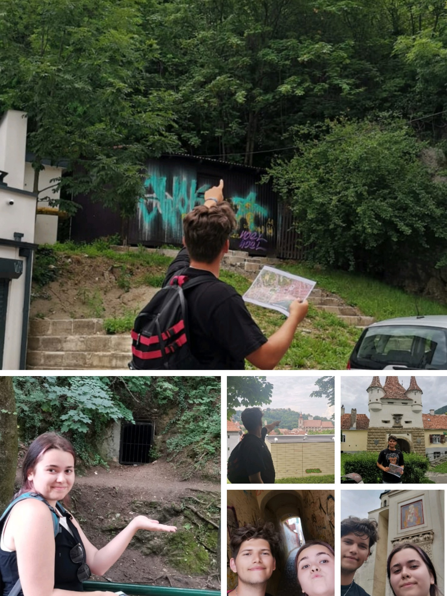
A doua activitate a zilei a fost urcarea pe Tâmpa, cu observații asupra reliefului, vegetației, peisajului urban și relației dintre munte și oraș.

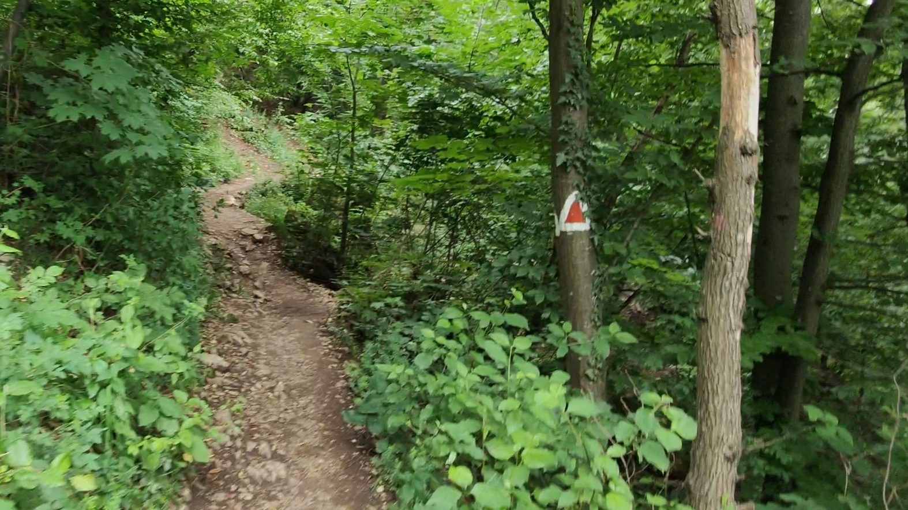
De pe Tâmpa, studenții au analizat Depresiunea Brașovului, cartierul Șchei, structura urbană și unitățile montane învecinate, încheind prima zi cu o fotografie de grup.
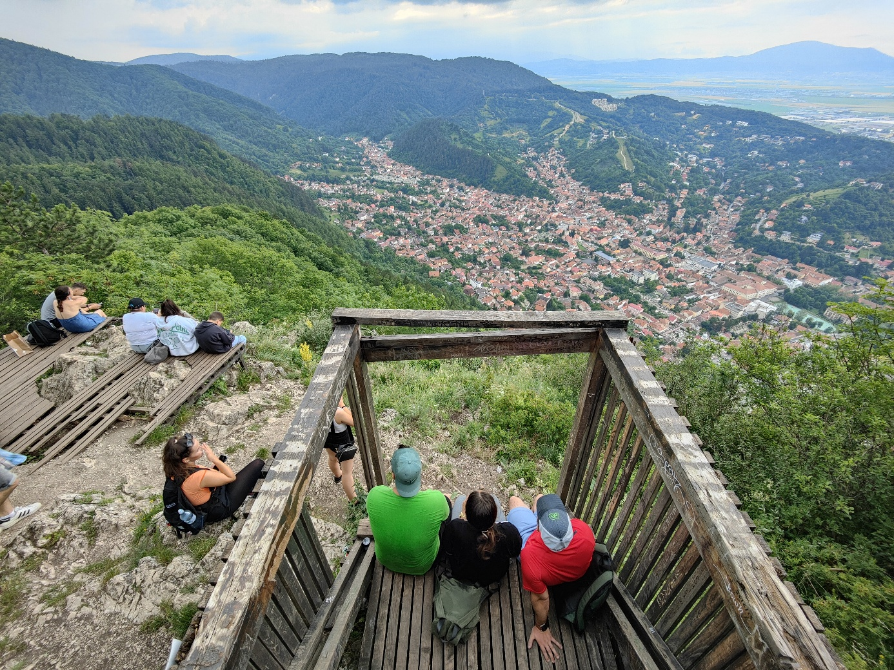
Competențe dezvoltate
Utilizarea hărții, identificarea obiectivelor și orientarea rapidă în centrul istoric.
Corelarea elementelor urbane, turistice și naturale observate direct în teren.
Interpretarea peisajului din puncte de belvedere și recunoașterea unităților vecine.
Observarea calcarelor, aflorimentelor și formelor carstice de pe Tâmpa.
Discuții despre pădurile de fag, habitate și statutul de rezervație al Muntelui Tâmpa.
Activități competitive, colaborare și responsabilitate în grup.
Galerie foto

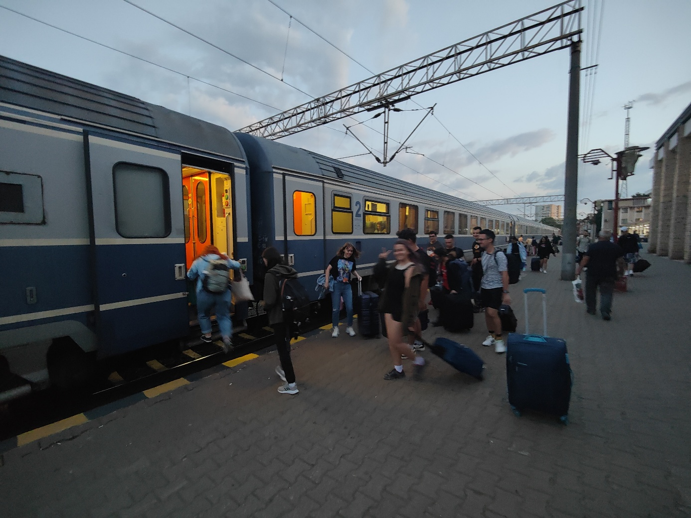
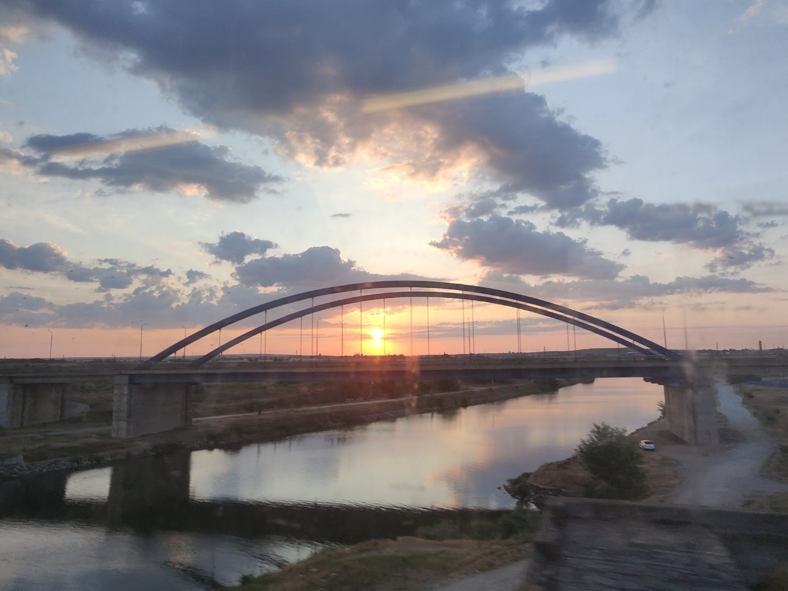
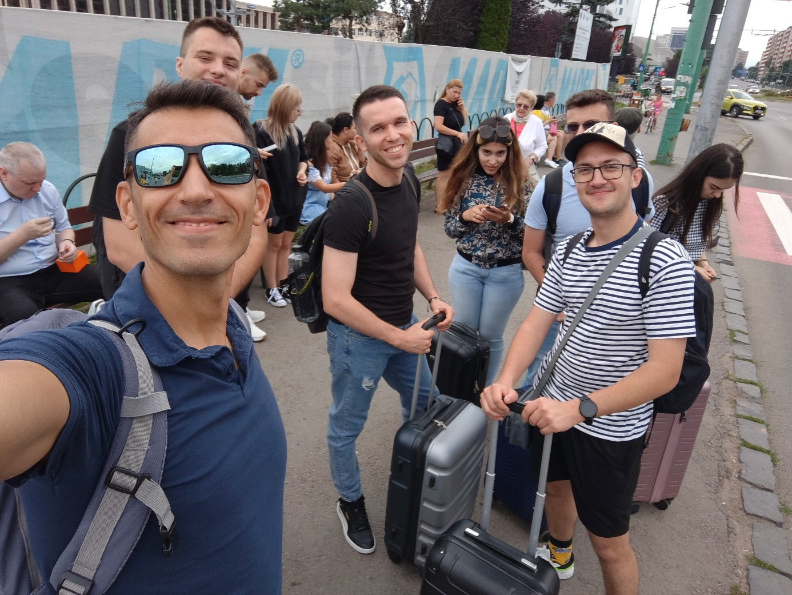
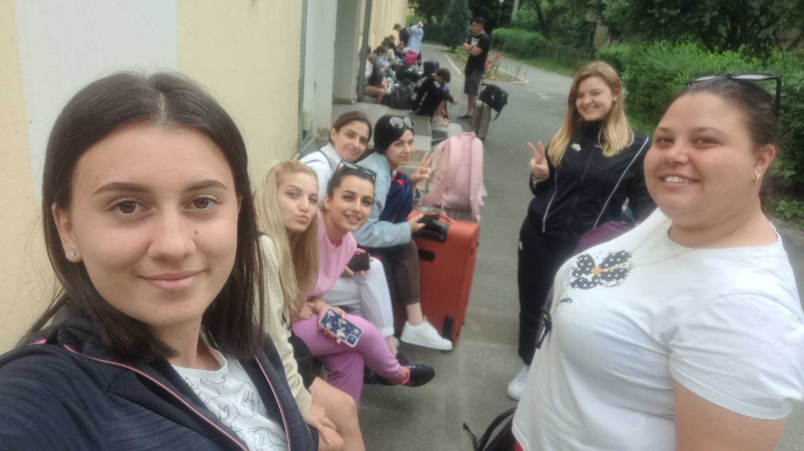
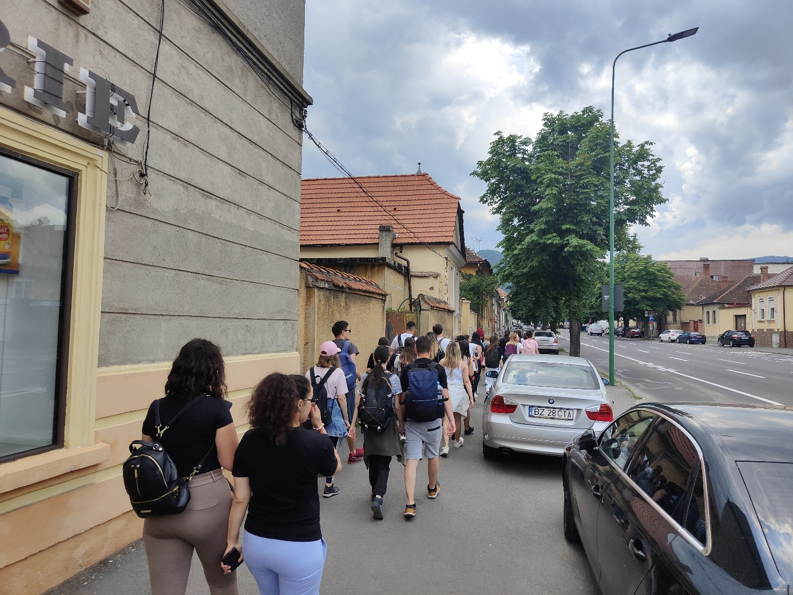
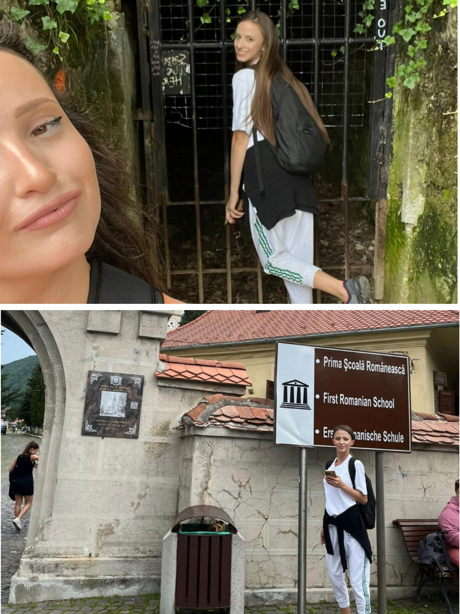
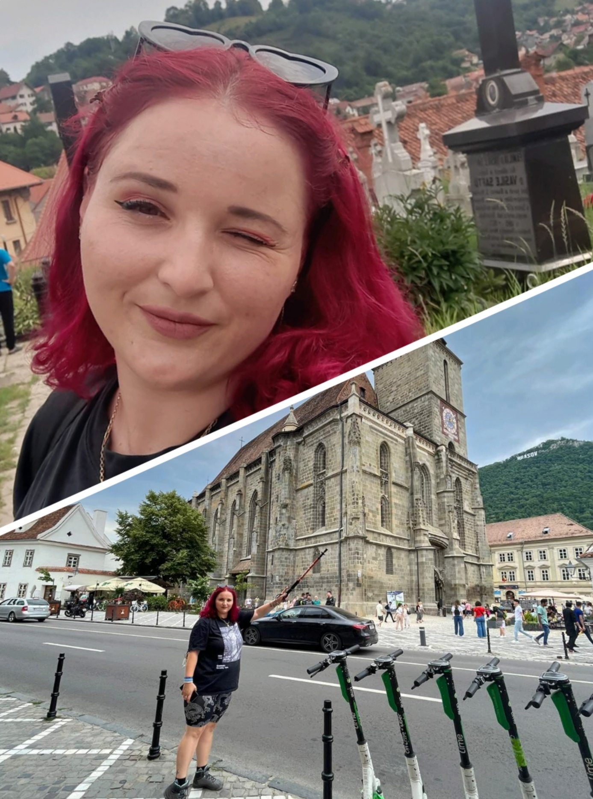
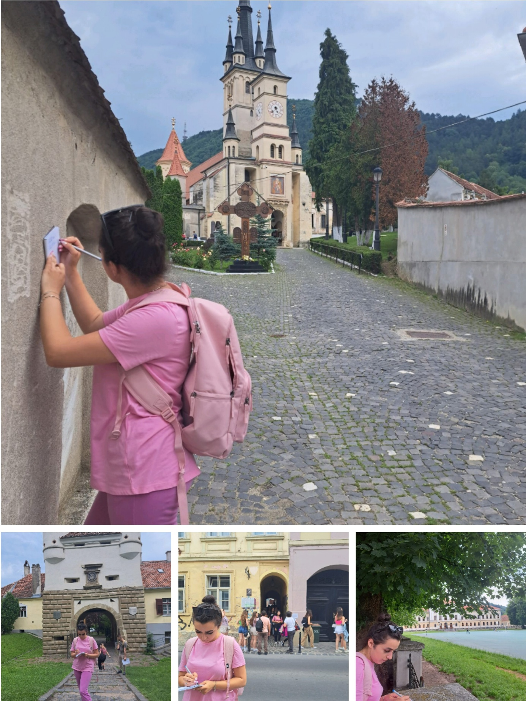
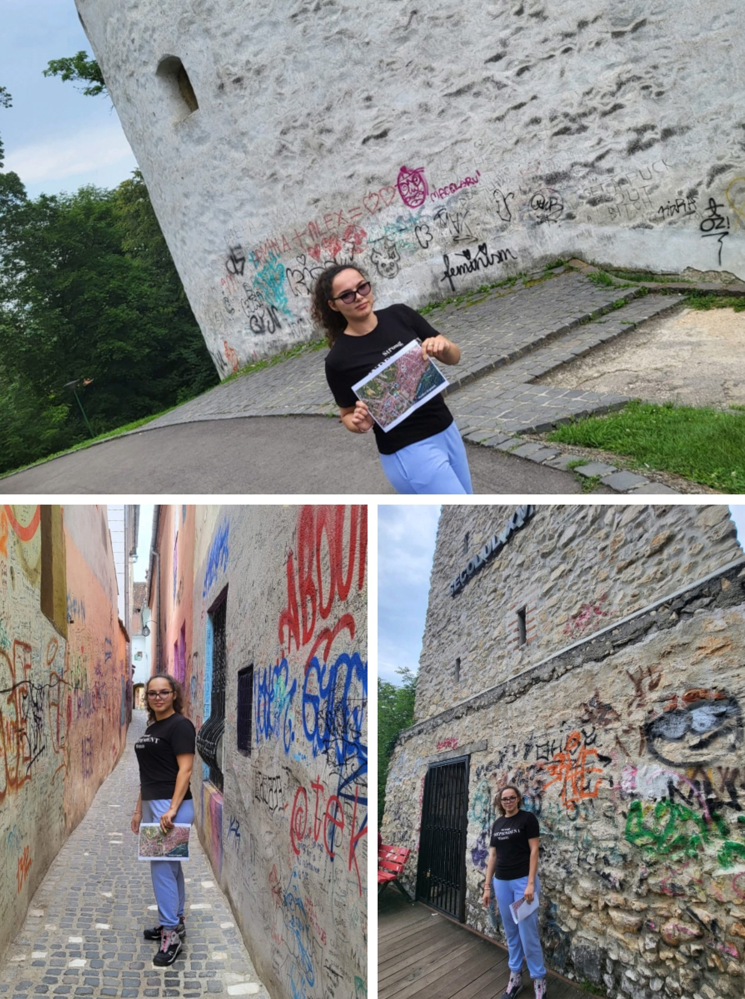
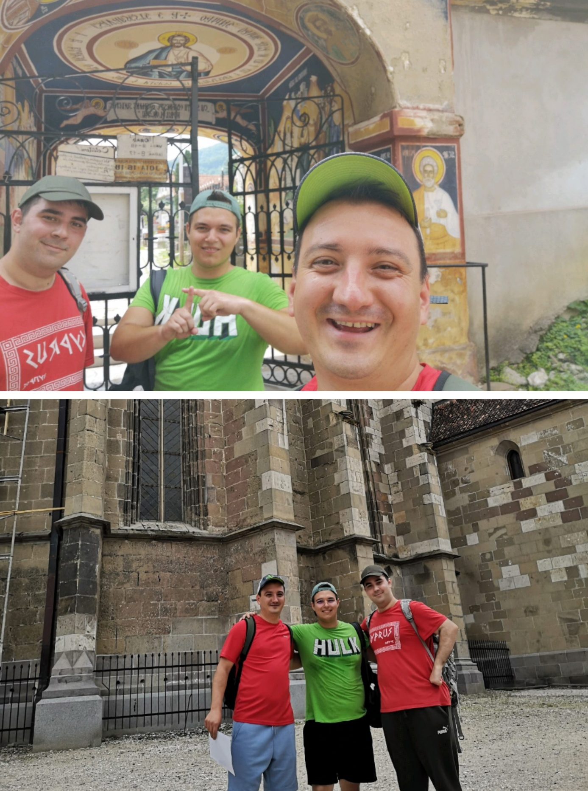